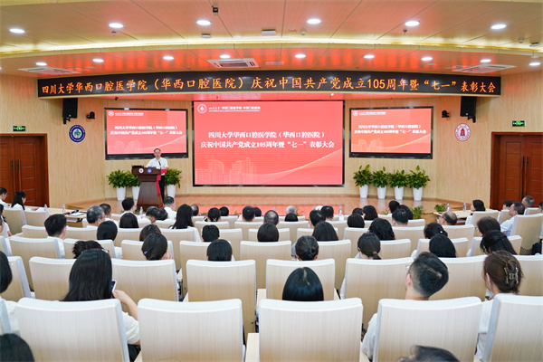

学院通知 · 校园活动
我院举行庆祝中国共产党成立105周年暨“七一”表彰大会
发布时间：2026/06/30
百年风华启新程，初心如磐担使命。2026年6月29日，我院举行庆祝中国共产党成立105周年暨“七一”表彰大会，院领导、两委委员、受表彰人员、全院党支部书记、党员科主任、支部委员、师生党员代表、新党员代表参加大会。会议由院党委副书记林云锋主持。 大会伊始，学生艺术团带来合唱《领航》，青年师生以婉转激昂的歌声抒发对党的无限赤诚与美好礼赞，充分展现了青年一代紧跟党走、奋发向上的精神风貌。 表演结束后，伴随着庄严嘹亮的中华人民共和国国歌，全体参会人员肃立齐唱国歌，以昂扬姿态致敬党的百年奋斗征程。国歌奏毕，参会人员共同观看《党建引领树标杆 凝心聚力创一流》主题短片，系统回顾了学院（医院）过去一年党建工作的亮点成效。 薪火相传五十载，矢志不渝担使命。首先举行“光荣在党50年”纪念章颁发仪式，随着老党员入党志愿书的朗诵声缓缓响起，泛黄文字里饱含的热忱真挚跨越50年直击人心，在场众人无不为之动容。院党委书记谭静和院长韩向龙为到场的老同志代表颁发纪念章，并为他们赠送院党委精心制作的专属礼物——50年前入党志愿书影印版。 院长韩向龙宣读了院党委关于表彰先进党支部等表彰决定。院领导依次为先进党支部、第二批“标杆党支部”培育创建单位、“一支部一特色”示范党支部授牌，并为优秀党务工作者、优秀共产党员颁奖。表彰的“两优一先”代表刘显同志、廖金凤同志作交流发言。 院党委书记谭静作总结发言，代表院党委向所有受表彰的先进集体和个人表示热烈祝贺，并向全院党员致以诚挚感谢。她表示，过去一年全院紧扣“十五五”开局要求，深入推进“三个一流”创建，扎实开展树立和践行正确政绩观学习教育，推动党建与教研医事业深度融合，党建引领学科建设取得亮眼成绩。她勉励全体党员坚定理想信念、厚植为民情怀、勇担发展重任，在加快推进世界一流口腔医学学科建设上主动担当作为，持续树立华西口腔标杆，贡献华西口腔经验，以实干实绩向党和人民交出新时代满意答卷。 在党委副书记、纪委书记沈颉飞的带领下，全场党员面向党旗，高举右拳重温入党誓词，铮铮誓言回荡会场。伴随着雄浑激昂的《国际歌》，本次表彰大会圆满落下帷幕。 此外，我院何苗同志获评四川大学“优秀党务工作者”，王骏同志、学生党员杨阳同志获评四川大学“优秀共产党员”。 标签：
